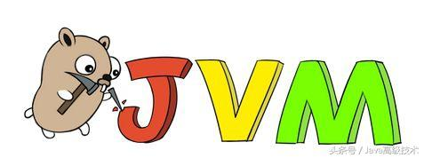
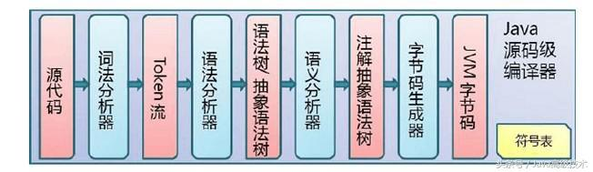
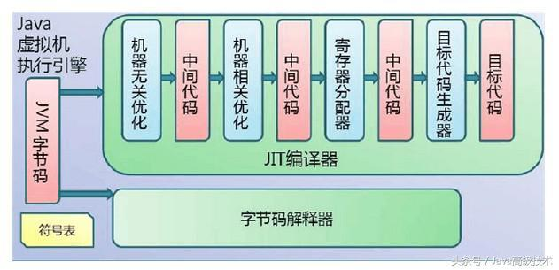
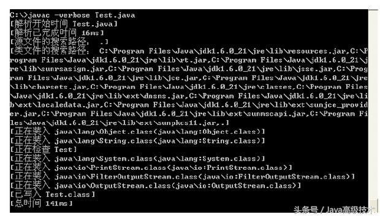
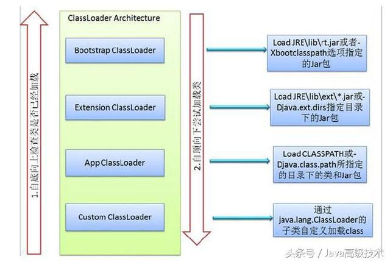
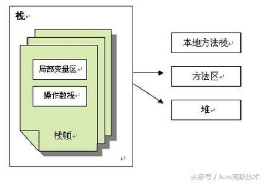
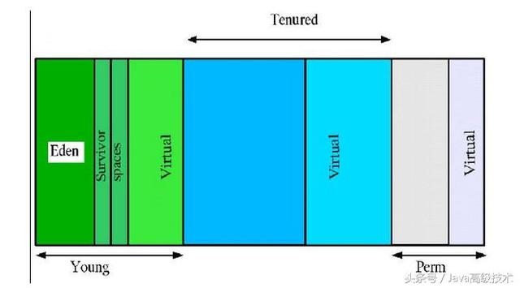
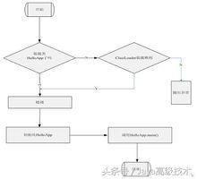
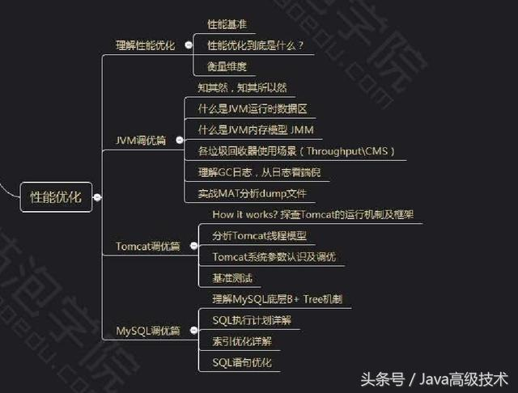

程序猿：看懂这篇“JVM”文章后，你再决定以后的路该怎么走？
做java开发的几乎都知道jvm这个名词，但是由于jvm对实际的简单开发的来说关联的还是不多，一般工作个一两年（当然不包括爱学习的及专门做性能优化的什么的），很少有人能很好的去学习及理解什么是jvm，个人认为这块还是非常有必要去认真了解及学习的，这是java的基石。

JVM是什么？
JVM是Java Virtual Machine（Java虚拟机）的缩写，JVM是一种用于计算设备的规范，它是一个虚构出来的计算机，是通过在实际的计算机上仿真模拟各种计算机功能来实现的。
对于JVM的学习，在我看来这么几个部分最重要：
Java代码编译和执行的整个过程
JVM内存管理及垃圾回收机制
Java代码编译和执行的整个过程
Java代码编译是由Java源码编译器来完成，流程图如下所示：

Java字节码的执行是由JVM执行引擎来完成，流程图如下所示：

Java代码编译和执行的整个过程包含了以下三个重要的机制：
Java源码编译机制
类加载机制
类执行机制
如果大家有想学习了解的，可以加入我的Java高级架构进阶学习群：671017482
Java源码编译机制
Java 源码编译由以下三个过程组成：（javac –verbose 输出有关编译器正在执行的操作的消息）
分析和输入到符号表
注解处理
语义分析和生成class文件

最后生成的class文件由以下部分组成：
结构信息。包括class文件格式版本号及各部分的数量与大小的信息
元数据。对应于Java源码中声明与常量的信息。包含类/继承的超类/实现的接口的声明信息、域与方法声明信息和常量池
方法信息。对应Java源码中语句和表达式对应的信息。包含字节码、异常处理器表、求值栈与局部变量区大小、求值栈的类型记录、调试符号信息
类加载机制
JVM的类加载是通过ClassLoader及其子类来完成的，类的层次关系和加载顺序可以由下图来描述：

1）Bootstrap ClassLoader /启动类加载器
$JAVA_HOME中jre/lib/rt.jar里所有的class，由C++实现，不是ClassLoader子类
2）Extension ClassLoader/扩展类加载器
负责加载java平台中扩展功能的一些jar包，包括$JAVA_HOME中jre/lib/*.jar或-Djava.ext.dirs指定目录下的jar包
3）App ClassLoader/ 系统类加载器
负责记载classpath中指定的jar包及目录中class
4）Custom ClassLoader/用户自定义类加载器(java.lang.ClassLoader的子类)
属于应用程序根据自身需要自定义的ClassLoader，如tomcat、jboss都会根据j2ee规范自行实现ClassLoader
加载过程中会先检查类是否被已加载，检查顺序是自底向上，从Custom ClassLoader到BootStrap ClassLoader逐层检查，只要某个classloader已加载就视为已加载此类，保证此类只所有ClassLoader加载一次。而加载的顺序是自顶向下，也就是由上层来逐层尝试加载此类。
类执行机制
JVM是基于栈的体系结构来执行class字节码的。线程创建后，都会产生程序计数器（PC）和栈（Stack），程序计数器存放下一条要执行的指令在方法内的偏移量，栈中存放一个个栈帧，每个栈帧对应着每个方法的每次调用，而栈帧又是有局部变量区和操作数栈两部分组成，局部变量区用于存放方法中的局部变量和参数，操作数栈中用于存放方法执行过程中产生的中间结果。
内存管理和垃圾回收
JVM内存组成结构
JVM栈由堆、栈、本地方法栈、方法区等部分组成，结构图如下所示：

JVM内存回收
Sun的JVMGenerationalCollecting(垃圾回收)原理是这样的：把对象分为年青代(Young)、年老代(Tenured)、持久代(Perm)，对不同生命周期的对象使用不同的算法。(基于对对象生命周期分析)

1.Young（年轻代）
年轻代分三个区。一个Eden区，两个Survivor区。大部分对象在Eden区中生成。当Eden区满时，还存活的对象将被复制到Survivor区（两个中的一个），当这个Survivor区满时，此区的存活对象将被复制到另外一个Survivor区，当这个Survivor去也满了的时候，从第一个Survivor区复制过来的并且此时还存活的对象，将被复制年老区(Tenured。需要注意，Survivor的两个区是对称的，没先后关系，所以同一个区中可能同时存在从Eden复制过来对象，和从前一个Survivor复制过来的对象，而复制到年老区的只有从第一个Survivor去过来的对象。而且，Survivor区总有一个是空的。
2.Tenured（年老代）
年老代存放从年轻代存活的对象。一般来说年老代存放的都是生命期较长的对象。
3.Perm（持久代）
用于存放静态文件，如今Java类、方法等。持久代对垃圾回收没有显著影响，但是有些应用可能动态生成或者调用一些class，例如Hibernate等，在这种时候需要设置一个比较大的持久代空间来存放这些运行过程中新增的类。持久代大小通过-XX:MaxPermSize=进行设置。
举个例子：当在程序中生成对象时，正常对象会在年轻代中分配空间，如果是过大的对象也可能会直接在年老代生成（据观测在运行某程序时候每次会生成一个十兆的空间用收发消息，这部分内存就会直接在年老代分配）。年轻代在空间被分配完的时候就会发起内存回收，大部分内存会被回收，一部分幸存的内存会被拷贝至Survivor的from区，经过多次回收以后如果from区内存也分配完毕，就会也发生内存回收然后将剩余的对象拷贝至to区。等到to区也满的时候，就会再次发生内存回收然后把幸存的对象拷贝至年老区。
通常我们说的JVM内存回收总是在指堆内存回收，确实只有堆中的内容是动态申请分配的，所以以上对象的年轻代和年老代都是指的JVM的Heap空间，而持久代则是之前提到的MethodArea，不属于Heap。

现在我们就通过一个具体的例子来分析它的运行过程。
虚拟机通过调用某个指定类的方法main启动，传递给main一个字符串数组参数，使指定的类被装载，同时链接该类所使用的其它的类型，并且初始化它们。新建一java源文件并取名HelloApp.java，内容如下：
class HelloApp {
public static void main(String[] args) {
System.out.println("Hello World!");
for (int i = 0; i < args.length; i++ ) {
System.out.println(args);
}
}
}
在命令模式下输入：javac HelloApp.java 进行编译，这时同目录下会产生一个编译后的文件：HelloApp.class
然后在命令行模式下键入：java HelloApp run virtual machine
将通过调用HelloApp的方法main来启动java虚拟机，传递给main一个包含三个字符串"run"、"virtual"、"machine"的数组。我们略述虚拟机在执行HelloApp时可能采取的步骤。

JVM虚拟机运行过程
开始试图执行类HelloApp的main方法，发现该类并没有被装载，也就是说虚拟机当前不包含该类的二进制代表，于是虚拟机使用ClassLoader试图寻找这样的二进制代表。如果这个进程失败，则抛出一个异常。类被装载后同时在main方法被调用之前，必须对类HelloApp与其它类型进行链接然后初始化。
链接包含三个阶段：检验，准备和解析。
检验检查被装载的主类的符号和语义，准备则创建类或接口的静态域以及把这些域初始化为标准的默认值，解析负责检查主类对其它类或接口的符号引用，在这一步它是可选的。类的初始化是对类中声明的静态初始化函数和静态域的初始化构造方法的执行。一个类在初始化之前它的父类必须被初始化。

哇哇咔，过完一个周末到现在还没有缓过劲来，你们有想特别了解的那些技术点吗？
——源码分析、Spring 企业级开发前瞻，持久层，高性能/高并发，分布式协调技术 zookeeper 服务锁，Nosql，高可用性/可扩展，分布式架构介绍，服务调用，性能优化，JVM优化，数据库优化，服务器优化，双十一电商项目实战（用户认证系统，商品管理系统，订单系统，支付系统等等）
留言给我，我会优先更新的，也可以加我的群：671017482，群公告有大量的视频教程，谢谢大家！